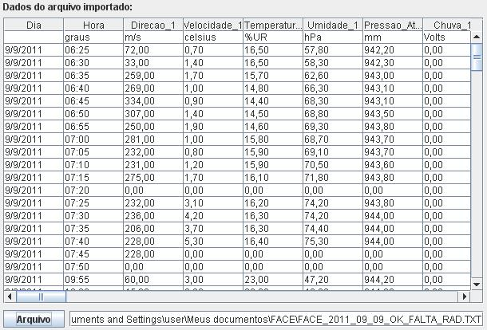

Arquivos de dados podem possuir diferentes formatos e separadores e, portanto, a fim de evitar a obstrução da inserção dos dados à base de dados foi necessário generalizar o aplicativo definindo-se a identificação de formatos e separadores como papel do usuário. Pode-se encontrar a interface de seleção de separadores no seguinte caminho: Arquivo > Definir separadores.
Além disso, a formatação de datas entre arquivos de dados distintos podem variar e portanto foi adotada a mesma solução utilizada para os diferentes formatos e separadores de dados.
Para selecionar um arquivo de dados o usuário deve utilizar o botão Arquivo ou executar a operação pelo caminho Arquivo > Abrir. Caso o usuário não tenha definido um separador de dados, o aplicativo não importará o arquivo para sua interface (visto que este não foi informado sobre como tratar os dados) e apresentará uma mensagem de aviso. Caso contrário, os dados serão apresentados na sessão "Dados do arquivo importado".

Figura 1. Dados de um arquivo importados para a interface do aplicativo.
Para fechar o arquivo o usuário poderá utilizar o caminho Arquivo > Fechar.